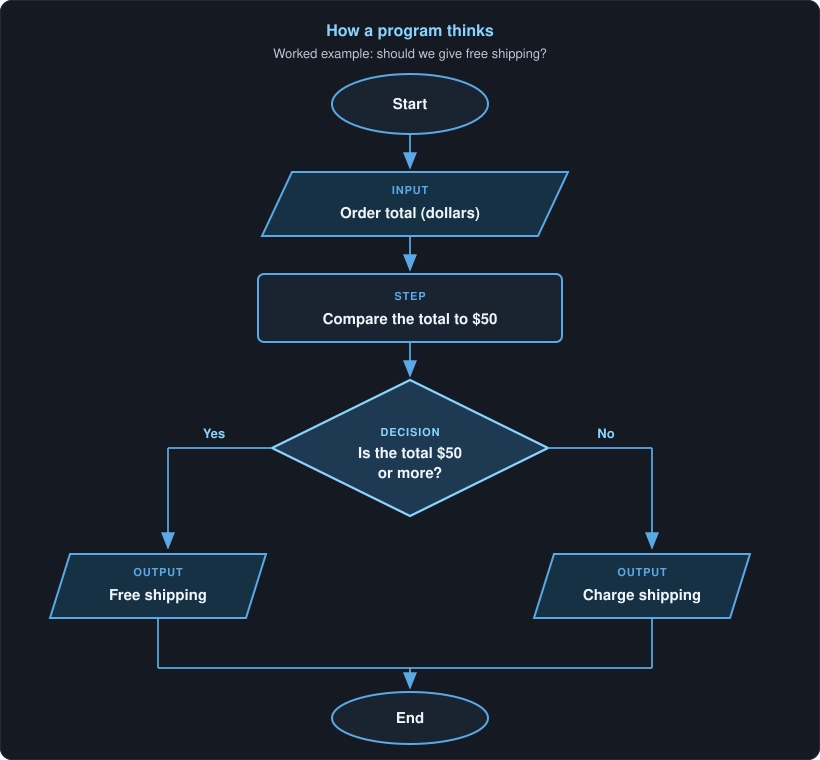

Lab · Lesson 2
How programs think
If you are beginning to learn software development, this is a first principle to lock in: every useful program is inputs, then steps, then decisions — and often outputs.
Reading is not the finish line. After the example, you will complete an activity that demonstrates the principle: name the inputs, steps, and decisions for a new problem in the companion GitHub project.
Inputs, steps, decisions
A program does not “just run.” It takes facts in, does work with them, and chooses a path. If you can name those parts in plain language, you can write the code later. If you cannot name them, the code will be a guess.
- Inputs are the facts the program needs. A dollar amount. An age. A yes-or-no flag. Something you can write down before any syntax.
- Steps are the work: compare, add, look up, copy, format. One thing at a time.
- Decisions are questions with a clear yes or no (or a small set of answers). The answer picks the next path.
- Outputs are what you hand back: a message, a price, a saved record, a screen. Many useful programs have them. Some only change something and stop.
That is the whole shape. Languages change. This shape does not.
One picture of the shape
Here is that shape as a flowchart. Follow it top to bottom. Ovals start and end. The slanted box is an input. The rectangle is a step. The diamond is a decision. The two slanted boxes at the bottom are outputs.

A tiny worked example: free shipping
A shop gives free shipping when an order is $50 or more. Before any code, name the parts.
- Input: the order total, in dollars.
- Step: compare that total to 50.
- Decision: is the total $50 or more?
- Outputs: “free shipping” or “charge shipping.”
Two sample orders. Same thinking, different answers.
| Order total (input) | Step | Decision: $50 or more? | Output |
|---|---|---|---|
| $72 | Compare 72 to 50 | Yes | Free shipping |
| $28 | Compare 28 to 50 | No | Charge shipping |
You could write this in any language. The program is not the
if. The program is the named input, the comparison, the
yes-or-no question, and the two outputs. The if is just
how you write the decision down.
In C# the same idea looks like this. You do not need to run it to understand the lesson; it is the table above written as a decision.
// Input: orderTotal
// Step: compare orderTotal to 50
// Decision: is it 50 or more?
if (orderTotal >= 50)
{
// Output
Console.WriteLine("Free shipping");
}
else
{
// Output
Console.WriteLine("Charge shipping");
}A common mistake: jumping to code first
Beginners often open an editor and start typing if
before they can say what the program is looking at, or what question
it is answering. That feels like progress. It usually is not.
- If you cannot name the input, you do not know what to ask the user — or what to read from a file or a form.
- If you cannot name the decision, you will invent extra branches, or miss the one that matters.
- If you change the shop’s rule later (free shipping at $75, not $50), you should change a named fact, not hunt through leftover guesses in the code.
Write the inputs and the decision in a sentence first. Then write the code that matches the sentence. The sentence is the program. The code is the recording of it.
Try this
Your turn — complete the activity
Demonstrate the principle. Name the inputs, steps, and decisions for a new problem — before you write any code. Do the work in the companion GitHub project so you finish with something you can show.
Open the companion GitHub project
Fork the repo (or clone it and work in your own copy). Follow the README there. Put your completed notes in that project — a short file that names the parts is enough. That artifact is the point of this lesson.
- State the problem in one sentence. Use the ticket-price problem in the companion repo, or this one if the README is still thin: Should this visitor pay the child ticket price? (child price if age is 12 or under.)
- List the inputs, the steps, the yes-or-no decision, and the outputs. No code yet.
- Walk two sample cases (one yes, one no), the same way the free-shipping table does above.
Hint: if you catch yourself writing if before the
decision is a plain-language question, stop and name the question
first.
Check yourself
Answer these before you open the notes below.
- What are the three parts of a useful program? What is often a fourth?
- In the free-shipping example, what is the input? What is the decision?
- Why is opening the editor and writing
iffirst a mistake? - The shop changes the rule to free shipping at $75. What do you rename or change first — a line of syntax, or a named fact?
Short answers
- Inputs, steps, and decisions. Outputs are often the fourth — what you hand back after the decision.
- The input is the order total in dollars. The decision is “Is the total $50 or more?”
- Because you have not named what the program needs or what question it answers. The
ifis only how you write a decision you already understand. - Change the named fact first: the threshold is now 75, and the decision is “Is the total $75 or more?” Then update the code to match that sentence.
If you have not yet put named inputs, steps, and decisions in the companion project, go back to Try this and finish that before you leave the lesson.